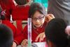
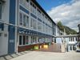

TUM School of Education - Die Bildungsfakultät
Ingenieure gesucht: Master Berufliche Bildung Integriert
In drei Jahren zur vollständig ausgebildeten Lehrkraft an beruflichen Schulen im höheren Dienst! Der Studiengang Master Berufliche Bildung Integriert richtet sich an Bachelor-Absolventinnen und -Absolventen aus ingenieurwissenschaftlichen Studiengängen in den Fachgebieten ...[mehr]
Kooperation mit der Pontificia Universidad Católica de Chile: Instrumente zur Evaluation von Materialien zum naturwissenschaftlichen Lernen
Im Auftrag der Siemens Stiftung und in Kooperation mit dem Lehrstuhl für Biologiedidaktik der LMU entwickelt eine Arbeitsgruppe am Lehrstuhl für Schulpädagogik Instrumente zur Evaluation von Materialien zum naturwissenschaftlichen Lernen, die im Rahmen des internationalen...[mehr]
Integration durch Inhalte aus MINT-Fächern: Angebot für Geflüchtete im Schülerforschungszentrum Berchtesgadener Land
Am Schülerforschungszentrum Berchtesgadener Land ist heute das Projekt „Integration durch MINT“ angelaufen. Bei diesem von der School of Education der Technischen Universität München (TUM) entwickelten Programm werden junge Geflüchtete nicht nur über die gängigen Themen eines...[mehr]